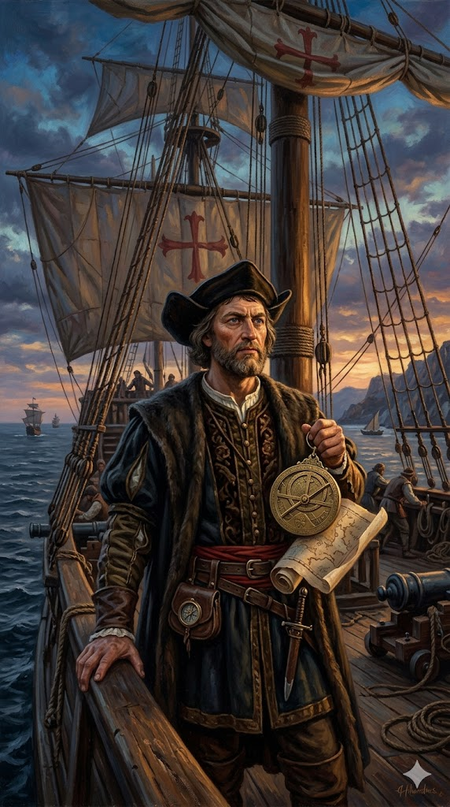

כריסטופר קולומבוס

לחץ על התמונה להגדלה
מקור ומשמעות השם המלא (אטימולוגיה)
שם פרטי: כריסטופר (Christopher / Cristoforo)
השם "כריסטופר" נובע מהשם היווני העתיק "Christophoros" (Χριστόφορος). השם מורכב משני חלקים ברורים:
חלק ראשון - Christos (Χριστός): פירושו "משיח" או "המשוח בשמן", אשר מתייחס לישו בנצרות (מקור המילה מיוונית עתיקה שתרגמה את המילה העברית "משיח").
חלק שני - Phoros (φόρος) מן הפועל pherein: פירושו "לשאת" או "להחזיק".
משמעות כוללת: "נושא המשיח". בנצרות, משמעות זו נקשרה לאגדה על קדוש נוצרי (סט. כריסטופר) שנשא את ישו הילד על כתפיו מעבר לנהר. קולומבוס ראה בשמו נבואה: הוא האמין שייעודו הוא "לשאת את המשיח" (כלומר, את האמונה הנוצרית) אל מעבר לאוקיינוס, אל עמים שטרם שמעו את הבשורה.
שם משפחה: קולומבוס (Columbus / Colombo / Colón)
שם המשפחה מקורו ישירות מהשפה הלטינית. באיטלקית שמו היה קריסטופורו קולומבו, ובספרדית קריסטובל קולון.
משמעות המילה "Columbus": יונה. היונה מסמלת היסטורית שלום, ואת רוח הקודש במסורת הנוצרית הקתולית. אירוני למדי, בהתחשב בהשלכות האלימות של מסעותיו על העמים הילידיים, שמו סימל שלום והבאת רוח הקודש.
ילדות ורקע מוקדם
כריסטופר קולומבוס נולד בשנת 1451 ברפובליקה של גנואה (כיום צפון-מערב איטליה), אחת המעצמות הימיות והמסחריות הבולטות של הים התיכון. הוא נולד למשפחה ממעמד הביניים של אומנים וסוחרים; אביו, דומניקו קולומבו, היה אורג צמר וסוחר גבינות, ואימו הייתה סוזנה פונטנרוסה.
הים התיכון היה מגרש המשחקים שלו. כבר בגיל 10 או 14 החל לעבוד כנער סיפון על ספינות סוחר שיצאו מנמל גנואה. ילדותו בסביבה קוסמופוליטית סוחרת נטעה בו את התשוקה לים ולמסחר. במהלך מסעותיו המוקדמים הוא למד לנווט, להכיר את משטרי הרוחות, והגיע לחופי אפריקה ואף לצפון אירופה, שם ייתכן ושמע סיפורים מפי ספנים נורדים על ארצות במערב הרחוק (כמו וינלנד של לייף אייריקסון).
אידאולוגיה, מניעים ותפיסת עולם
תפיסת עולמו של קולומבוס הייתה שילוב מורכב, ולעיתים סותר, של אופורטוניזם מסחרי, שאפתנות אישית בלתי מתפשרת ולהט דתי כמעט משיחי.
המניע הכלכלי-מדעי: קולומבוס ידע (כמו רוב המלומדים בתקופתו) שכדור הארץ עגול, אך הוא טעה משמעותית בחישוביו (התבסס על הערכות שגויות של תלמי וכאלו מהמאה ה-9). הוא האמין שהיקף כדור הארץ קטן בהרבה ממה שחישבו היוונים, ושאירופה ואסיה משתרעות על פני שטח רחב בהרבה. לכן, הוא סבר שהפלגה מערבה דרך האוקיינוס האטלנטי היא "קיצור דרך" מהיר ורווחי להגיע לאיי התבלינים, לסין (קתי) וליפן (שיפנגו) – אזורים שתוארו בעושר אגדי בספרו של מרקו פולו.
המניעים האישיים: מעבר לחזון הכלכלי, קולומבוס דרש עבור עצמו תנאים חסרי תקדים. הוא לא רצה רק להיות חוקר; הוא דרש את התואר "אדמירל האוקיינוס", את התואר "המשנה למלך" (Viceroy) ומושל כללי של כל הארצות שיתגלו, וכן עשירית מכל ההכנסות, הזהב והסחורות שיופקו מאותן ארצות. שאפתנות זו מצביעה על מניע אישי עמוק של עלייה בסולם החברתי והתעשרות מהירה.
המניע הדתי-משיחי: קולומבוס תפס עצמו כשליח ההשגחה העליונה. בכתביו (כמו "ספר הנבואות" שחיבר מאוחר יותר) הוא טען שמטרת העושר שיימצא במזרח היא לממן מסע צלב אירופאי ענק לשחרור ירושלים מידי המוסלמים. בנוסף, הוא ראה חשיבות עליונה בניצור המוני של עובדי אלילים שטרם נחשפו לדת הקתולית.
נסיבות היסטוריות והמאבק לאישור המסע
המסע של קולומבוס לא יצא לדרך בקלות. זה היה תהליך מפרך של שכנוע שנמשך כמעט עשור. בשנת 1453 נפלה קונסטנטינופול (איסטנבול) לידי האימפריה העות'מאנית, מה שחסם וייקר משמעותית את נתיבי הסחר היבשתיים למזרח. אירופה נזקקה לנואשות נתיב חלופי. הפורטוגלים (שהובילו בניווט) כבר החלו למפות את חופי אפריקה כדי להקיף אותה מדרום.
הפריצה בספרד: קולומבוס פנה למלכים הקתוליים של ספרד, פרדיננד ואיזבלה ב-1486. שוב ושוב ועדות מלומדים דחו אותו (בעיקר בגלל דרישותיו האישיות המוגזמות לתארים ואחוזים, וכן החישובים השגויים שלו). רק בשנת 1492, לאחר שספרד השלימה את ה"רקונקיסטה" (כיבוש גרנדה מידי המוסלמים) ורצתה נואשות למצוא יתרון על פני פורטוגל, היא הסכימה לממן את המסע ההימור. הייאוש הכלכלי של ספרד, והשפעתם של יועצים מקורבים (כמו לואיס דה סנטאנגל), הובילו לבסוף לחתימה על "ההסכמים של סנטה פה", שאישרו את המסע ונענו לרוב דרישותיו.
המסע ההיסטורי של 1492 והפלגות ההמשך
ב-3 באוגוסט 1492, יצא קולומבוס מנמל פאלוס דה לה פרונטרה שבספרד עם שלוש ספינות קטנות: הניניה, הפינטה והסנטה מריה, וצוות של כ-90 איש.
מסעות ההמשך: במהלך מסעו הראשון הוא גילה ומיפה גם חלקים מקובה והיספניולה (האיטי והרפובליקה הדומיניקנית של ימינו), שם הקימו את יישוב הקבע האירופאי הראשון. קולומבוס ערך עוד שלושה מסעות נוספים למערב (ב-1493, 1498 ו-1502), במהלכם חקר את חופי מרכז אמריקה, ג'מייקה, פוארטו ריקו ואף את חופי ונצואלה שבדרום אמריקה. למרות כל הראיות הגיאוגרפיות ההולכות ומצטברות, קולומבוס שמר על אמונתו העקשנית עד יומו האחרון כי הוא הגיע למזרח אסיה.
גילויים מרכזיים והשפעותיהם (ההחלפה הקולומביאנית)
מהות הגילוי: קולומבוס "גילה" את האמריקות עבור המעצמות האירופאיות, ופתח את הדלת לקשר רציף וקבוע בין ההמיספרה המזרחית (העולם הישן) להמיספרה המערבית (העולם החדש), קשר שלא נותק מאז.
- מהעולם החדש לישן: תפוחי אדמה, תירס, עגבניות, קקאו (שוקולד), טבק, ווניל, שהצילו את אירופה מרעב ושינו את המטבח העולמי.
- מהעולם הישן לחדש: סוסים, בקר, חזירים, חיטה, סוכר וקפה, ששינו את האקולוגיה של אמריקה לחלוטין.
המחיר האנושי וההשפעות ההרסניות: לצד ההישג הניווטי, מורשתו של קולומבוס מורכבת ואפלה. הגילוי שלו הוביל לאסון דמוגרפי מהגרועים בהיסטוריה. האירופאים הביאו עמם מחלות (כמו אבעבועות שחורות, חצבת ושפעת) שלהן לילידי אמריקה לא הייתה כל חסינות. כתוצאה ממחלות, שעבוד ברוטלי במכרות (אנקומיינדה), רעב ומלחמה, נכחדו מיליוני ילידים בתוך עשרות שנים ספורות. בנוסף, חיסול האוכלוסייה המקומית הוביל את המעצמות האירופאיות לייבא עבדים מאפריקה כדי לעבוד במטעים, מה שהתניע את סחר העבדים הטרנס-אטלנטי. מסעו של קולומבוס התחיל את עידן הקולוניאליזם האירופאי שעיצב את העולם המודרני, על כל הישגיו וזוועותיו.
מקורות וביבליוגרפיה (אימות מחקר)
- יומני קולומבוס (Diario of Christopher Columbus): היומן המקורי אבד, אך סיכומו על ידי הנזיר ההיסטוריון ברטולומה דה לאס קאסאס (Bartolomé de las Casas) שרד ומהווה את המקור הראשוני החשוב ביותר למסע של 1492.
- חיי האדמירל קריסטופר קולומבוס: ביוגרפיה שנכתבה על ידי בנו, פרדיננד קולומבוס, המספקת הצצה ייחודית, אם כי מעט מוטה, למניעיו וחייו של אביו.
- מחקר היסטורי קלאסי: Morison, Samuel Eliot (1942). Admiral of the Ocean Sea: A Life of Christopher Columbus. (זכה בפרס פוליצר, נחשב למחקר מקיף מאוד על יכולות הניווט של קולומבוס).
- אקולוגיה וההשפעה הגלובלית: Crosby, Alfred W. (1972). The Columbian Exchange: Biological and Cultural Consequences of 1492. (הספר שטבע את המונח והגדיר מחדש את השפעת הגילוי).